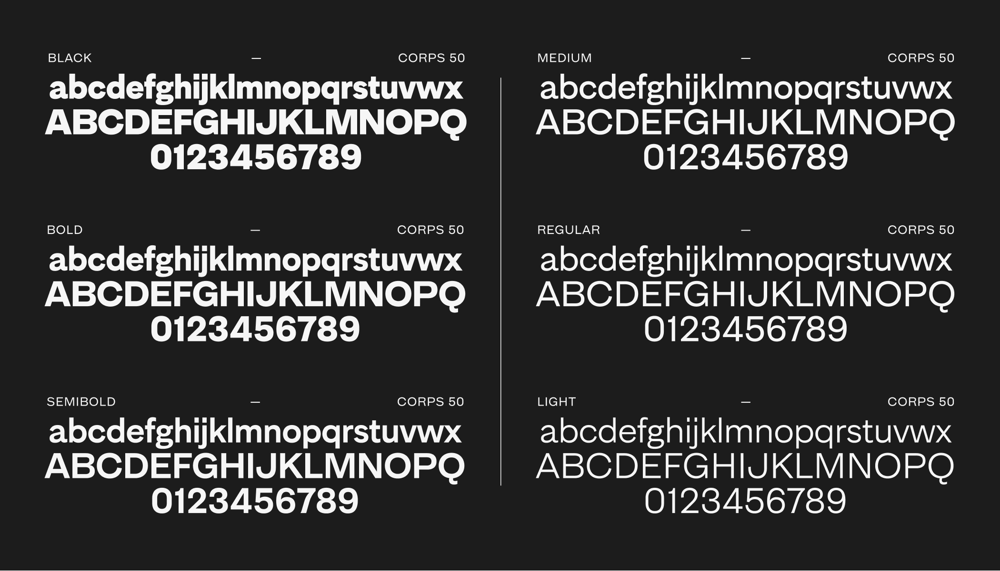

A reinterpretation of the flaws of early sans-serifs (2020–21)
MD Primer was designed to celebrate the often unrefined, inconsistent nature of grotesque typefaces from the late 19th century. Related to my work on MD System, though designed for a different range of contexts.
Available for licensing at Mass-Driver, along with a more detailed article on MD Primer’s design process.

Specimen · The six available weights of MD Primer.